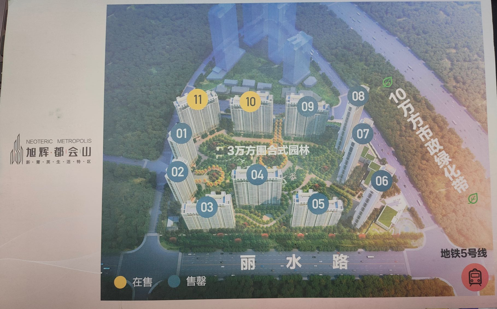
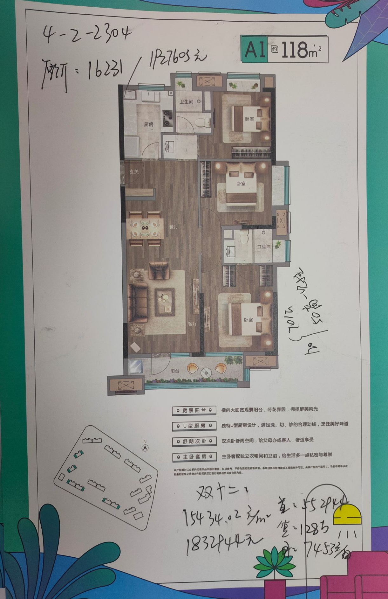

hello,Hexo（一）
【本篇文章解决的事情：
- 搭建hexo博客，并部署到github；
- 博客源文/源码提交github管理】
【本篇文章解决的事情：
- 搭建hexo博客，并部署到github；
- 博客源文/源码提交github管理】
午夜他病发，他推他出门，在街头同享根烟。一起打赌，演戏骗警察为超速的他们带路。躲着所有人去山里跳伞，领略从高空俯视大地美景的征服感。他帮他打破瘫痪的自卑，成功抱得美人归。
一个护工，照顾一个瘫痪的人，被拍的有趣、真实、自然、动人。给我去想像的话，剧情或许是这样：护工衣不解带的服侍、牺牲自我、容忍病人的一切坏毛病和坏脾气。
然而在这部电影里，生与死都不再是拿来当噱头的泪点。在生命有限的时光里，宁愿心随我动的放肆，也不愿随时像一个垂死者一样向旁人乞求帮助，这是一种对生命的敬意与尊重。与感动无关，虽然无时无刻令观看的人感受到温情。
在电影后半段，富翁不想再让他陪着一个病人度过余生，于是他换了另一名看护。那位始终小心翼翼，稍有问题就以“他有病”来与旁人解释的专业看护，令他的心一日日苍老，越发怀念那个陪他玩、陪他疯、甚至拿瘫子这件事开玩笑的朋友。
在这个故事里，人性的光辉闪耀，并不在于他们之间，谁为谁做出了更大的牺牲，仅仅只是在于：你给我所想要的安静与尊严，我给你所愿的认可与提携。他们的学识、身份、地位迥异，却在这一点上有着空前契合的态度：不要用你以为的善意，去让对方感激。
每个成年人都有一个无法被陌生人轻易触及的世界，不管是健康的人，亦或者身患重症的人。他们只有在遇到同类的那一刻，才会释放出一种夹杂着欣喜的善意。这种善意，并非传统意义上的善，而是相信并且看重彼此的能量、真诚的表达自己，以及不把自认为的善强加给对方。
不要以善之名行凶，这或许是太多人都未能领悟的事。你认为她需要安抚和劝慰，而她其实只想着能不能一个人独自穿过黑夜。你以为他应该选择更好的那一个，于是百般劝阻，却不知道有些路只能自己走，有些选择或许是错的但却是心中所向。
我们的父母，我们的朋友，毫无疑问都是真心关怀我们的人。可为什么，真正到了艰难之处，却对他们难以言苦，甚至想逃离他们。人与人之间，必须只能是因为在善恶观上达成一致，才可心心相通。旁人认为的善，往往于自身更像负累。旁人认为的恶，却是你认为的自由在高处。
他们为什么能超越阶层的成为心灵知己，并且即使后来各自有了自己的生活，仍然常来常往。因为，他们读懂了对方的善。更因为，他们首先把对方视为一个有独立人格的自由人，其次才是朋友。任何以情意为筹码，就想左右控制对方人格自由的，最终的结局都必然是毁了那情意。
可以说，瘫痪的菲利普被德希斯给了不设限的人生，正与他瘫痪前的滑翔伞等极限运动精神相合，被照顾下的他，完全感受不到，他讨厌的同情心，还能找回曾经的自己。
他们才是真正的知己，不是说一味的八字全和，意见永一视为同；不是说所谓直率，劈头盖脸视为真心；不是说百般呵护，知冷知热视为实意。这俩鬼人的契合，可以说天壤之别，奇怪，说不出是什么感觉，却总觉得很合适。
为什么当菲利普不忍心德希斯一直这么照顾他这样一个病人，而选择换了一个护工时，他苍老地这么快，因为新护工总是小心翼翼地照顾他，而在他眼里，就是时刻告诉他，你是个病人，你不能这样不能那样的。
德希斯总能忘掉菲利普时一个瘫子，总能让菲利普的明天不一样。
综上所述：powershell支持更多命令。内存根本不差这点，界面高亮舒服，排版执行前调整好窗口大小即可，最重要的是命令的支持。
也有一篇微软官方的问答回复了这个问题：power shell和cmd有什么区别？
cmd是和powershell都可以做命令行交互，批处理和powershell脚本功能也相当。
Windows PowerShell 是专为系统管理员设计的新 Windows 命令行 shell。Windows PowerShell 包括交互式提示和脚本环境，两者既可以独立使用也可以组合使用。
与接受和返回文本的大多数 shell 不同，Windows PowerShell 是在 .NET Framework 公共语言运行时 (CLR) 和 .NET Framework 的基础上构建的，它接受和返回 .NET Framework 对象。环境中的这一根本更改带来了管理和配置 Windows 的全新工具和方法。
Windows PowerShell 引入了 cmdlet（读作“command-let”）的概念，这是内置到 shell 中的一个简单的单一功能命令行工具。可以分别使用每个 cmdlet，但是组合使用这些简单的工具执行复杂任务时才发挥其作用。Windows PowerShell 包括一百多个基本的核心 cmdlet，您可以编写自己的 cmdlet 并与其他用户共享它们。
与许多 shell 一样，Windows PowerShell 为您提供了对计算机上文件系统的访问。此外，使用 Windows PowerShell 提供程序还可以访问其他数据存储，如注册表和数字签名证书存储，就像访问文件系统一样容易。
最终呢，Anaconda里面的两种命令行的区别，也是同上。
采光，不止是光线，而是太阳光直射的时长
方位，光线也可通过判断方位来评估，有现房或者楼已开始在建的话，直接去看实物，使用手机指南针判断方位，应该让阳台窗户有对着南向（就湖北而言，面向南方，太阳应该是在面前的从动到西，而不是正头顶的从东到西）
楼层，选择中等偏上，但除去楼顶1-2层的位置，有介意高层的也尽量选择总层数的1/4以上处。这样不管是采光还是风景还是噪音都可以有一定的保障。举个例子：40层的楼，理想选择25-38，想要低也不要低于10层（长辈比较介意的会有带4的楼层，因为迷信有谐音）
还有比较重要的几个需要关注的指标：
周边
根据事件发生的概率，以下的几点就是我的考虑顺序
开发商，物业这块，能讲究就讲究一下，连恒大都倒了，还有什么不可能。适当考虑，不太作重点，也不是完全不考虑啊，有的已经明显有风险，老板跑路的，还是要慎重一点把
几个注意事项：
旭辉都会山-(广申房地产)：单价15.4k，总价180w，近三环，近地铁，五号线已通车，配套小学残破不堪，菜市场拆迁受阻，对面有个拘留所。
 金地兰亭大境
美的君兰半岛
保利上城
景瑞天赋滨江
1、选择搭建LaTeX环境/选用在线编辑
搭建环境
搭建LaTeX写作环境
清华TeXlive镜像
这是一篇草稿纸
Welcome to Hexo! This is your very first post. Check documentation for more info. If you get any problems when using Hexo, you can find the answer in troubleshooting or you can ask me on GitHub.